🏗️
10 STEP GUIDE
AS ABAP Fundamentals & System Start/Stop
Architecture, instances, work processes, start/stop procedures and log analysis.
AS ABAP FundamentalsStarting and Stopping SAP SystemsExercise 1: Start and Stop the SAP System
The uploaded syllabus is organised into practical topic guides. Every major module includes a relevant architecture diagram, detailed steps, T-codes/tools, source-syllabus coverage, production checklist and interview wording.
Learn the reasoning behind each BASIS activity instead of memorising only the T-code.
Click any card. The guide opens with the relevant diagram and detailed procedure.
Architecture, instances, work processes, start/stop procedures and log analysis.
Profile management, RZ10/RZ11, operation modes and ABAP task lists.
Database architecture from a BASIS perspective and how SAP depends on the database.
Users, authorization concepts, RFC destinations and secure system-to-system communication.
Plan, prepare, execute and validate SAP software maintenance.
Printer configuration, spool lifecycle and safe background-job administration.
A practical evidence-driven monitoring and troubleshooting methodology.
HTTP/HTTPS components, SAP Gateway and Web Dispatcher configuration concepts.
Email flow and high-availability concepts around enqueue replication.
Java architecture, startup/stop, Config Tool, NWA, UME and Java monitoring.
Landscape, transport requests, export/import, QA approval and monitoring.
Client copy/compare concepts and enhanced transport scenarios.
Fiori app types, launchpad, HTTPS, SSO, deployment options, search and operations.
HANA fundamentals, requirements, MDC, Studio/Cockpit, administration and lifecycle.
Backup/recovery strategy and HANA security administration.
A BASIS-focused migration lifecycle: assessment, preparation, execution and validation.
Central user administration, automated testing concepts and multi-language considerations.
Click a diagram to open the corresponding topic guide.
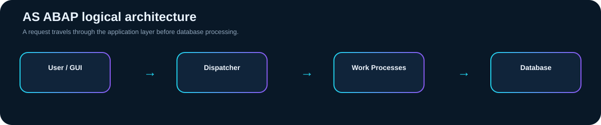
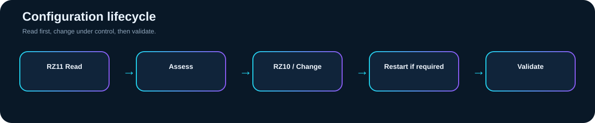
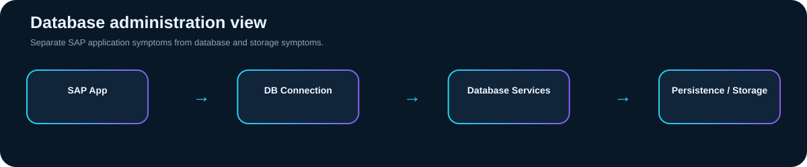
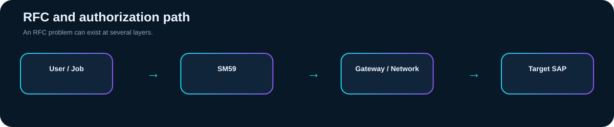
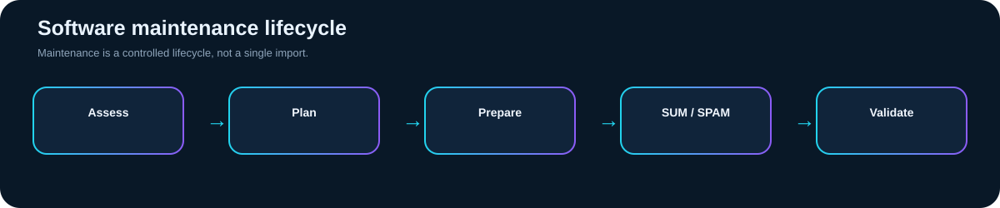
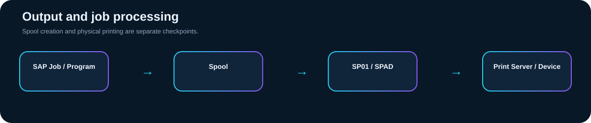
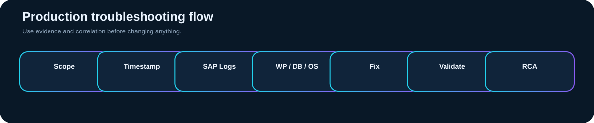
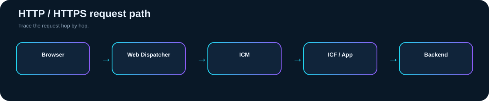
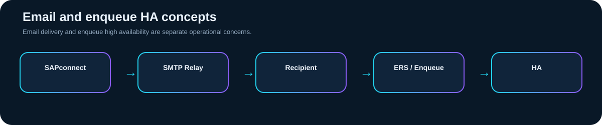
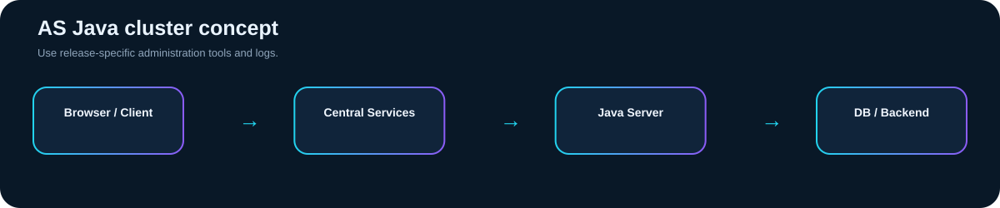
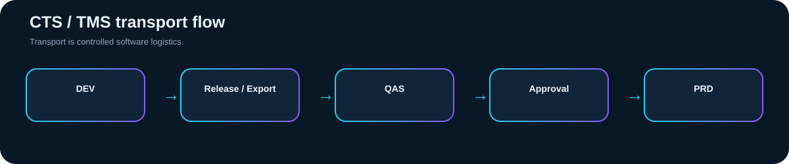
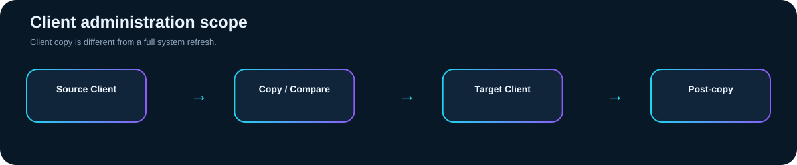
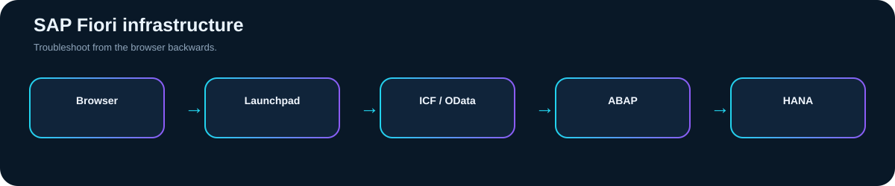
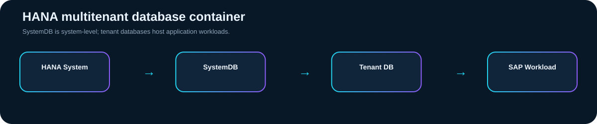
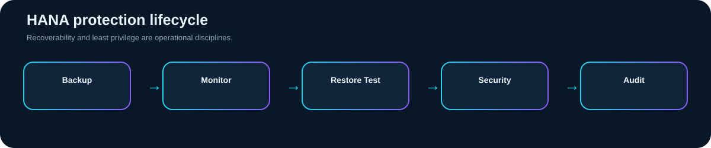
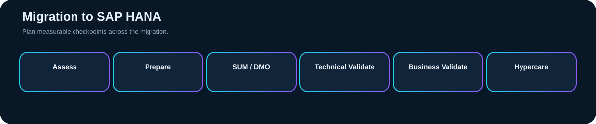
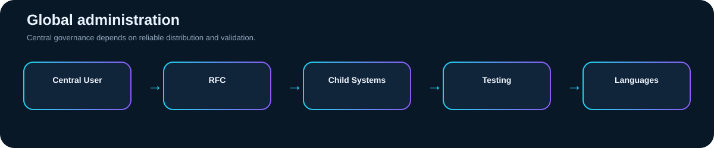
The module guides above are mapped back to the terminology and exercises present in your uploaded document.
BASIS Nexus is designed as a learning and interview companion for SAP technical administration. The objective is to explain what to check, why to check it, how to troubleshoot it, how to validate the result and how to explain the same work in an interview.